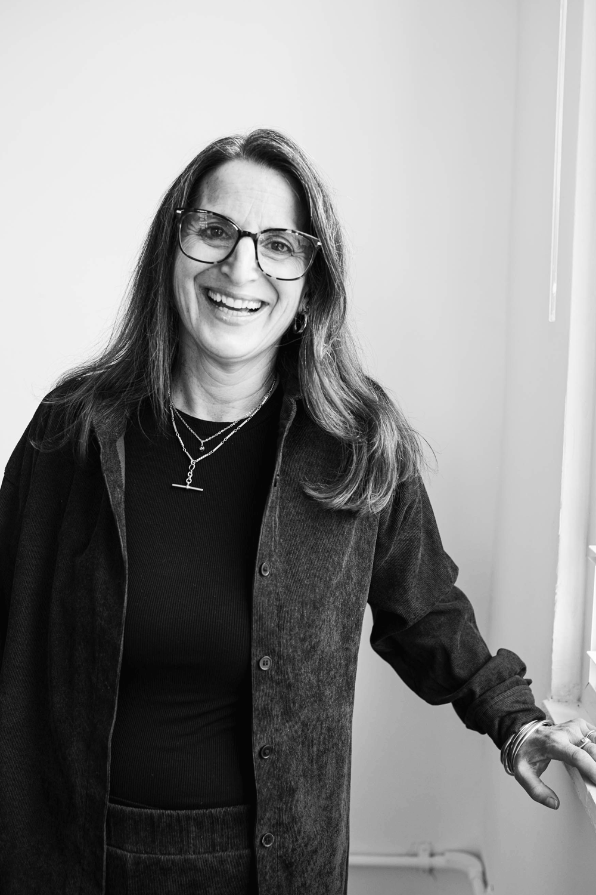
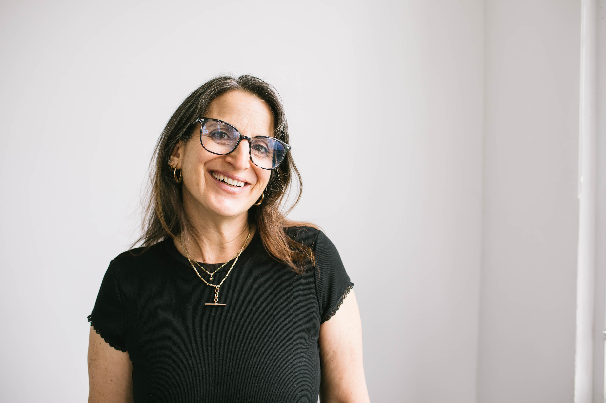
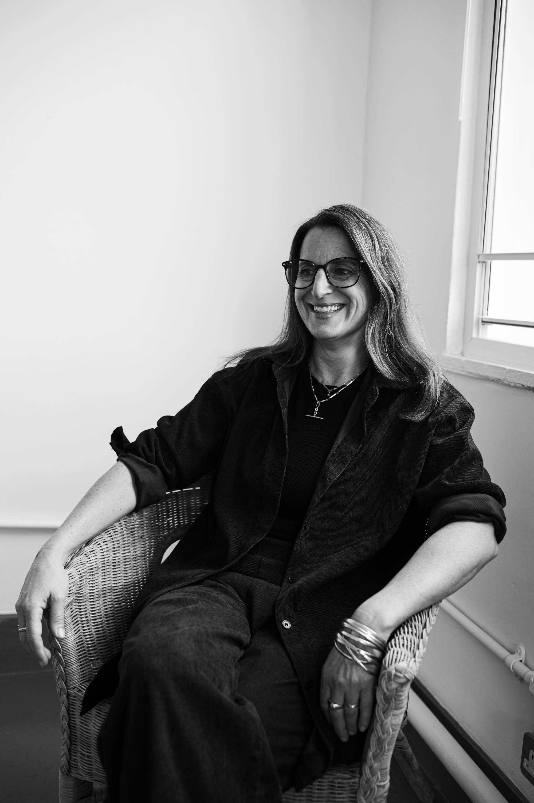

MA MBACP UKCP
Hi, I'm Tanya, a psychotherapist supporting children through to adulthood, alongside support for parents. I work in private practice and specialist educational settings.Whether you're at a crossroads, a parent at capacity, or a young person who is overwhelmed, I can help you make sense of what's going on and find a way through.
My personalised, heart-led approach draws on clinical training and lived experience, including parenting three sensitive, strong-willed children.
How I can help
I work with fear, trauma, loss and periods of uncertainty, with particular experience supporting neurodivergent individuals and their families.
Supporting children, adolescents, and parents through behaviour, identity, family dynamics, and the complexities of growing up.
Honest conversations for adults navigating crossroads, anxiety, trauma, grief, or simply feeling like life isn't quite working.
A neuro-affirming space for autistic, ADHD, AuDHD and dyslexic individuals — diagnosed, self-identified, or currently exploring.
I offer a free 10-minute consultation call so we can talk through what you're looking for and see if I am the right fit.

I'm Tanya, a UKCP and BACP accredited psychotherapist, originally trained in Integrative Child and Adolescent Art Psychotherapy.
I offer a warm, relational, authentically human and trauma-informed approach. People I support describe feeling met on their level, having a space where they can offload and be open and honest in a way that feels natural.
Feeling held through periods of uncertainty has shaped my understanding that we flourish when we feel supported. My experience as a mother of three children, navigating the complexities of family life has deeply influenced how I attune to the pressures that many of us face.
I have particular experience working with neurodivergent adolescents and adults, including those exploring identity, autonomy, difference or late diagnosis. Two of my children are neurodivergent which has given me a felt experience of being alongside those we love whilst navigating education and statutory processes.
If you're looking for a therapist who nods and avoids questions, then I might not be the therapist for you. I'm curious, approachable and direct. I often use humour and don't believe therapy has to feel overly formal.

My journey to become a therapist started later in life and I love my job. Outside of work, I adore family life, friendships, playing games, the quiet magic of sunlight through trees on forest walks with my labrador, a great book, bingeing a good TV series, creative writing and exploring the mystery of life.
Authentic connection sits at the heart of my practice. From this shared foundation, we can gently explore the messy reality of being human. I meet you with warmth and honesty, so you can feel met as you are.
My approach is collaborative and people describe feeling worked with rather than "treated". My face-to-face spaces are beautiful, homely and eclectic, rather than clinical settings.
Integrative therapy means I adapt my approach to you, rather than trying to fit you into a pre-existing model. We will make sense of what's happening internally and in your relationships.
The work moves at your pace, with no pressure to perform; we follow what feels helpful, whether that's through words, shared humour, or creative expression. Clients express that this helps them feel less overwhelmed and more able to make sense of things in their own way.
I collaborate with parents, families, and educational systems to advocate for you where helpful.
I have supported clients with a wide range of mental health and developmental challenges, including anxiety, depression, trauma, OCD, Autism, ADHD and AuDHD.
- Clinical Settings: Delivered one-to-one therapy within private practice, charities, mainstream schools, and specialist neurodivergent provisions (The Holmewood School).
- Systemic Insight: Shadowing neurodevelopmental teams at the Maudsley Hospital (CAMHS) gave me a deep understanding of NHS referral pathways, assessment processes and post-diagnostic support.
- Collaborative Practice: I frequently work alongside multi-disciplinary teams including OTs, Speech & Language Therapists, and school-based SEND/Wellbeing teams.
- Parental Support: I have created and facilitated parenting courses for schools and a London-based charity.
What My Approach Might Include
I draw from a range of evidence-based approaches, which we can blend to suit your needs:
Exploring how early experiences shape your present patterns and relationships.
Focusing on the "here and now," personal autonomy, and understanding your internal dynamics.
Prioritising safety, trust, and emotional readiness above all else.
Using art, play, and sandtray to express what words sometimes cannot.
Helpful tools for grounding and self-reflection.
Focusing on the mind-body connection to support regulation and nervous system safety.
Practical, flexible strategies to support your understanding, calm spiralling and help you cope.
Understanding your experiences within wider relationships and environments, including NVR-informed strategies for parents.
Qualifications & Registrations
Accreditation
UKCP and BACP Accredited Psychotherapist.
Clinical Training
Masters from the Institute for Arts and Therapy in Education (IATE) as a Child & Adolescent Integrative Arts Psychotherapist.
Specialist Diploma
Postgraduate Diploma in Integrative Child and Adolescent Counselling.
Governance
Fully insured, Enhanced DBS check, registered with the ICO. All sessions follow the ethical codes of my accrediting bodies.
Additional Professional Development
- ✦Neurodivergence & Sensory: Training via NAS and ACAMH, including Autism and Women and Autism and Anxiety (Tony Attwood).
- ✦Trauma & Anxiety: Certified Clinical Anxiety Treatment Professional (CCATP), specialised CBT-informed tools and Person-Centred Counselling for Depression (BACP).
- ✦Family & Education: NVR-informed (Non-Violent Resistance) foundation training, EBSA (Sunflower Network).
I offer a free 10-minute consultation call so we can talk through what you're looking for and see if I am the right fit.
Supporting Children
Children often communicate their inner world through behaviour and play long before they have the words. I often work with children to help confusing feelings and upsetting experiences be safely expressed. Through creative and sensory approaches that might include play, art, sand tray, we build emotional understanding and support regulation.
Supporting Adolescents
Knowing your child has a space where they can offload what's been building up during the week can make things feel more manageable at home, reducing the sense of pressure for everyone.
If your adolescent is anxious, overwhelmed, or hard to reach, I help them to feel calmer and more able to engage with life. Over time, at their pace, this can help them feel less alone and more able to express themselves.
We may explore identity, emotions and relationships, while gently developing ways to manage stress.
Supporting Parents
Today's family structures can leave us feeling isolated, with little guidance.
Families often describe our work as collaborative, thoughtful, and balanced. We begin by understanding what your child needs, sometimes starting together as a family. Over time, children often move from feeling overwhelmed and dysregulated to recognising their own signals, grounding themselves, and engaging more fully in everyday life.
Together, we explore what your child may be communicating, so responses feel less reactive. Parents often feel less stuck and more confident, with greater clarity about how to meet their child's needs.
Supporting sensitive or neurodivergent children often means holding the adults who love them. I help you find the balance between independence and support, while also navigating external systems with greater perspective and understanding.
Frequently Asked Questions
- Deepening Connection: Strengthening the bond between you and your child.
- Decoding Behaviour: Understanding what "difficult" behaviour is actually trying to express, using a trauma-informed, non-punitive lens.
- Navigating Conflict: Moving from cycles of aggression or shutdown toward genuine relational repair.
- Meeting Anxiety: Learning how to gently support your child in expanding their comfort zone.
- The Tightrope Balance: Finding the sweet spot between providing necessary scaffolding and encouraging age-appropriate independence.
- Navigating Modern Challenges: Practical support for screen-time management and digital well-being.
- Neuro-affirming Advocacy: Implementing strategies that work with your child.
- Growth: Support does not mean stagnation; boundaries, growth and change are part of the process.
- Emotional & Sensory Needs: Fear, panic, overwhelm, shutdown, and emotional regulation.
- Neurodivergence & Executive Functioning: Support with planning, organisation, initiation, working memory, and time management.
- Communication & Relationships: Navigating family stress, separation, divorce, and communication differences.
- Identity & Transition: Life stages from childhood to adolescence, moving away from home, and university transitions (including DSA processes).
- Managing Difficult Feelings: Coping with low mood, stress, grief, loss, and self-harm.
- Specialised Areas: Support for Emetophobia and complex trauma.
How to Get Started
We begin with a free 10-minute consultation so we can talk through your needs and see if I am the right fit for your family.
Enquire
Get in touch to arrange your free 10-minute consultation call.
Talk it through
We'll explore what you're looking for and answer any questions you have.
Book your Parent Intake
We'll book an extended 1.5-hour session to understand your family's context and current challenges.
Assessment Period
We begin with a few initial sessions before committing to ongoing, regular work.
Honest Conversations.
Human Connection.
If you're tired of holding everything in and trying to keep it together, I offer a place where you can feel heard and understood. We may explore what sits underneath a sense of overwhelm and difficult thoughts. Seeking support takes courage; here you can untangle what's really going on, at your own pace, allowing things to unfold naturally.
Navigating your 20s & 30s
Maybe it seems like everyone else has a plan, while inside you're caught in cycles of anxious thinking, spiralling or quietly panicking about where your life is going. Maybe you're scrolling through other people's careers, relationships, milestones, and putting pressure on yourself.
We'll work to help you make sense of things, whether you're moving through university, navigating work or managing the complexities of modern relationships.
What I can help with
Neurodivergence & University Support
Specialist insight into DSA processes, neuro-affirming study strategies and navigating university transitions.
Emotional Wellbeing
Fear, panic, overwhelm, shutdown and emotional regulation. Coping with depression, low mood, grief, bereavement, and chronic stress or health-related challenges.
Trauma
Prioritising safety and nervous system regulation.
Life Transitions
Navigating the shift from adolescence to adulthood, moving away from home and workplace or relationship changes.
I offer a free 10-minute consultation call so we can talk through what you're looking for and see if I am the right fit.
A Neuro-Affirming Space
I work with neurodivergence in all its forms: whether diagnosed, self-identified, or currently being explored. This includes whether you are autistic, ADHD, AuDHD or dyslexic, navigating a world that isn't always set up for you. I help you to understand your strengths and challenges, so life can feel more manageable.
My experience within a specialist educational setting, working alongside neurodivergent young people, makes my work real. I continue to deepen my practice through current training in neuro-inclusivity.
I understand each person's unique way of experiencing the world as a natural human variation and I meet you with curiosity. I recognise the social and historical contexts around neurodivergence, including experiences of misunderstanding and harm and I prioritise your lived experience in the language that matters to you.
Compassion & Challenge
This is a space that holds both. While we lead with acceptance, care does not mean staying stuck. Together, we move towards understanding, regulation and change, at a pace that is manageable and respectful.
Understanding your environment through the lens of regulation.
Processing the emotional exhaustion of performing for a neurotypical world.
Creating personalised strategies for planning, organisation and time management that actually work for your brain.
Seeking a diagnosis or processing a new diagnosis.
Managing workplace changes, university/school transitions or social processing fatigue.
Learning to advocate for your needs and finding ways to connect.
Partnership work with educational institutions to create environments that work for you.
Resources & Links
A curated collection of neuro-affirming resources I find valuable.
I offer a free 10-minute consultation call so we can talk through what you're looking for and see if I am the right fit.
— D. W. Winnicott
I offer a free 10-minute consultation call so we can talk through what you're looking for and see if I am the right fit to support you or your family.
Enquire
Get in touch via the form below to arrange your free 10-minute consultation call.
Talk it through
We'll use this time to explore what you're looking for and answer any questions you have.
Getting started
We begin with a few sessions to ensure our working relationship is the right fit, before committing to ongoing work.

Send me a message
Frequently Asked Questions
My fees are available upon request. Please get in touch for details.
I see clients in Highgate and Barnet, and I also offer Online sessions for flexibility.
I am registered with Bupa and Axa. Depending on your specific policy, you may be eligible to receive reimbursement for our sessions. Please check with your provider prior to starting.